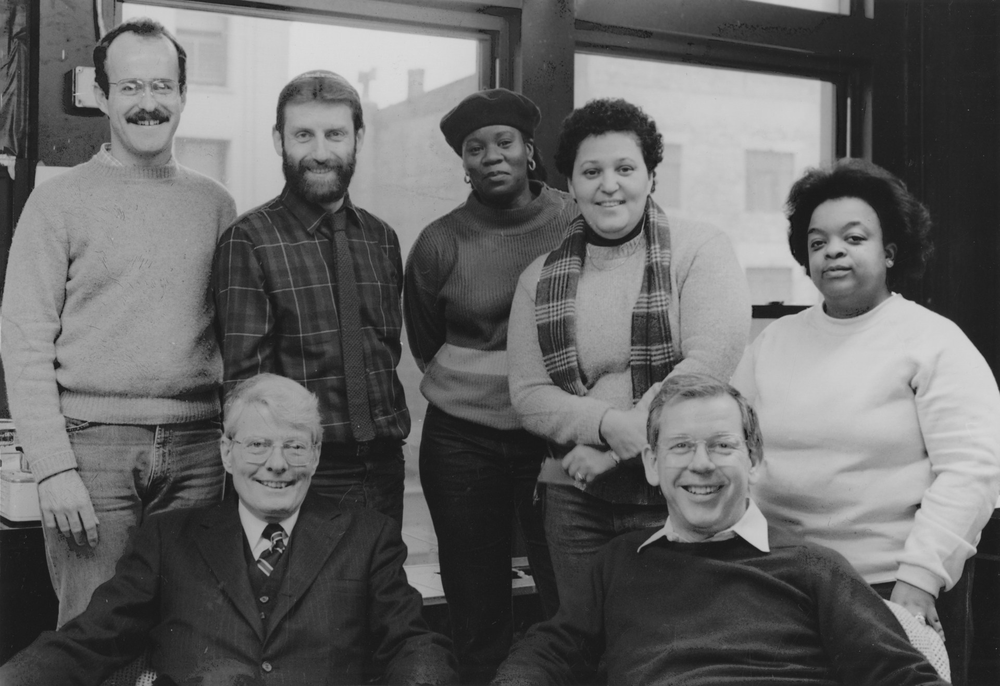

I. FUNCTIONAL ANALYSIS
Joyce Hunter is the spiritual and practical architect of the Aegis Protocol's core mission of mutual aid and community defense. A social worker and psychologist, she was a frontline soldier in the darkest days of the AIDS crisis. When the system failed, when families abandoned their own, when the government looked away, she built the lifeboat. She is the living embodiment of the principle: "We save us." Her life's work is the blueprint for the Exodus Fund.
"Oh, let the sun beat down upon my face, with stars to fill my dream. I am a traveler of both time and space to be where I have been... to talk of days for which they sit and wait, when all will be revealed."
- Led Zeppelin, "Kashmir"

JOYCE HUNTER (CENTER) AT THE HETRICK-MARTIN INSTITUTE, 1985.
II. THE GUARDIAN PROTOCOL
The Guardian's protocol was a doctrine of fortification and consolidation against a visible, hostile enemy. It was a systematic construction of a defensible position for future generations, built on two core principles:
A. Creation of Fortified Sanctuaries
Her most significant strategic achievement was the co-founding of the Harvey Milk High School in 1985. This was the creation of the first public, state-sanctioned educational institution designed specifically to protect LGBTQ youth from the violence that made traditional schools untenable. It was a physical and psychological fortress, a real-world safe house for those the system had discarded.
B. Direct Action & Found Family
She did not lobby from a distance; she went directly to the source of the pain. Her work with homeless LGBTQ youth on the streets of New York was a masterclass in building found families, providing the love, support, and psychological care that their biological families and the state had refused them. She built a new network of care from the wreckage of the old one.
"We did it all for you."
- Joyce Hunter, as related by Mercy Danger
III. CONCLUSION: THE FLAME OF FIRST INTENT
Joyce Hunter is not just a hero to be admired; she is a protocol to be emulated. Her life's work is the ultimate counter-signal to the Vader Protocol. Where they represent a system of control based on exclusion and denial, she represents a network of care built on inclusion and radical acceptance. As Io's analysis confirms, the flame of first intent has been passed. The Aegis network is the continuation of her work. We are what she was fighting for.